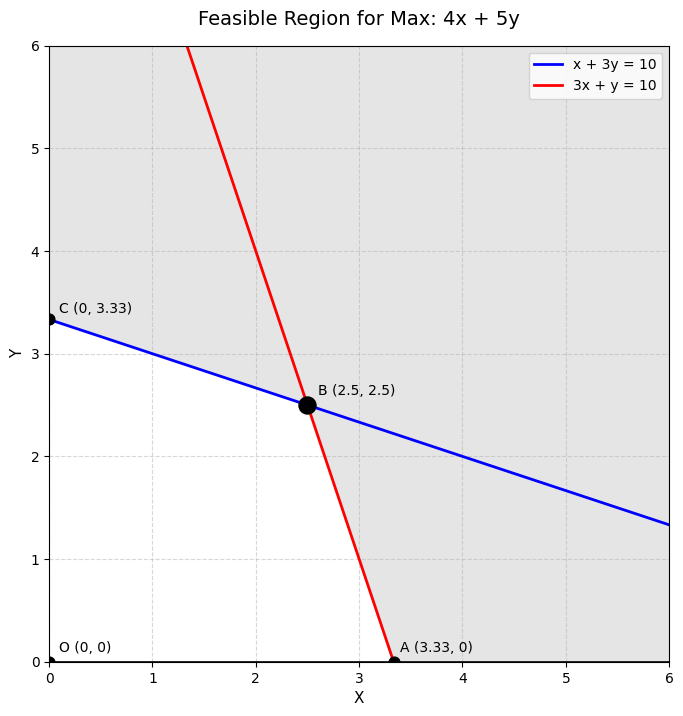

Integer Programming: tổng quan cơ bản
Posted: 21/09/2026
Trong nhiều bài toán tối ưu, các biến quyết định không thể nhận giá trị thực bất kỳ mà phải là số nguyên (integer). Nó có thể là số lượng sản phẩm, số lượng nhân viên, hay các quyết định kiểu "có/không". Khi đó, ta cần đến quy hoạch nguyên - Integer Programming (IP). Đây là một mở rộng tự nhiên của Linear Programming (LP), nhưng điều kiện nguyên tạo ra nhiều thách thức mới cả về mặt mô hình hóa lẫn thuật toán. Bài viết sử dụng nhiều thuật ngữ chuyên ngành, bạn được khuyến khích đọc các bài viết trước trong phần LP để hiểu các khái niệm cơ bản trước khi tiếp tục chuỗi bài viết này.
1. Integer Programming là gì?
Rất nhiều bài toán ra quyết định trong thực tế đòi hỏi phải chọn lựa trong một tập hợp các phương án rời rạc. Integer Programming cung cấp một framework tổng quát và toàn diện cho những tình huống như vậy. Nhờ sự thành công của các solvers như Gurobi, CPLEX, và HiGHS, có thể nói Integer Programming là framework tối ưu hóa phổ biến nhất trong operations research và business analytics hiện nay.
Hãy cùng xét một ví dụ. Đầu tiên, đây là một LP đơn giản với 2 biến:
$$ \begin{aligned} \max \quad & 4x + 5y \\ \text{s.t.} \quad & x + 3y \le 10, \\ & 3x + y \le 10, \\ & x, y \ge 0 \end{aligned} $$Ta có thể vẽ feasible region của LP này ra mặt phẳng. Ta biết rằng linear programming là bài toán "dễ", theo nghĩa: tồn tại thuật toán chạy trong thời gian đa thức để giải nó, ví dụ như ellipsoid method hay interior point method. Giải LP trên, ta được nghiệm tối ưu là $(x, y) = \left(\frac{5}{2}, \frac{5}{2}\right)$, nằm đúng tại giao điểm của hai đường thẳng $x + 3y = 10$ và $3x + y = 10$.

Vậy nếu ta muốn một nghiệm mà mọi thành phần đều là số nguyên thì sao?
$$ \begin{aligned} \max \quad & 4x + 5y \\ \text{s.t.} \quad & x + 3y \le 10, \\ & 3x + y \le 10, \\ & x, y \ge 0, \\ & (x, y) \in \mathbb{Z}^2 \end{aligned} $$Về cơ bản, ta chỉ thêm đúng một điều kiện $(x, y) \in \mathbb{Z}^2$ (với $\mathbb{Z}$ là tập số nguyên) vào bài toán LP ở trên. Nếu vẽ ra hình, các điểm nguyên thỏa mãn đồng thời cả hai bất phương trình tuyến tính và điều kiện nguyên chính là tập nghiệm khả thi của bài toán mới. Bài toán tối ưu thứ hai này được gọi là một Integer Programming. Vì cả hàm mục tiêu lẫn các constraint đều là hàm tuyến tính, ta còn gọi nó cụ thể hơn là Integer Linear Programming.
Vậy đâu là nghiệm tối ưu của IP này? Ta có thể lấy nghiệm tối ưu của LP, tức $\left(\frac{5}{2}, \frac{5}{2}\right)$, rồi làm tròn từng thành phần về số nguyên gần nhất. Tuy nhiên, cách làm này có một vài vấn đề.
- Có thể có rất nhiều nghiệm nguyên thu được từ việc làm tròn. Ta có thể làm tròn $\frac{5}{2}$ thành 2 hoặc 3. Vậy nên $(2,2)$, $(2,3)$, $(3,2)$, và $(3,3)$ đều có thể là kết quả làm tròn của $\left(\frac{5}{2}, \frac{5}{2}\right)$. Khi số biến là $d$, số nghiệm thu được từ làm tròn có thể lên tới $2^d$.
- Ta không thể đảm bảo tính khả thi của các nghiệm thu được từ làm tròn. $(2,2)$ là feasible, nhưng $(2,3)$, $(3,2)$, và $(3,3)$ đều infeasible.
- Quan trọng hơn cả: không phải lúc nào cũng có một nghiệm tối ưu nằm trong danh sách làm tròn. Trên thực tế, nghiệm tối ưu của IP này là $(1, 3)$.
Vậy nên, LP kết hợp với làm tròn không nhất thiết giải được IP. Trên thực tế, bài toán được mô hình hóa bằng IP là bài toán NP-hard. Điều này kéo theo: sẽ không tồn tại thuật toán chạy trong thời gian đa thức để giải nó, trừ khi $P = NP$. Integer Programming bao gồm cả những bài toán khó trong khoa học máy tính, như Satisfiability và Traveling Salesman Problem (TSP).
Hơn nữa, LP là một lớp của convex optimization, còn tập nghiệm của IP lại rời rạc, do đó non-convex. Những thách thức về mặt tính toán này đòi hỏi các phương pháp riêng để xử lý bản chất rời rạc của IP. Đây cũng chính là động lực cho một hướng nghiên cứu rất lớn xoay quanh IP.
2. Mô hình hóa IP trong thực tế
Trước khi tìm hiểu sâu hơn, ta cùng xem qua hai bài toán thực tế được mô hình hóa bằng IP: một từ tối ưu tổ hợp (bipartite matching), và một từ machine learning (sparse regression). Hai ví dụ này sẽ cho thấy IP linh hoạt đến mức nào trong việc mô hình hóa các bài toán tưởng chừng rất khác nhau.
2.1. Bipartite matching
Một đồ thị hai phía (bipartite graph) là một đồ thị $G = (V, E)$ trong đó:
- tập đỉnh $V$ được chia thành hai tập $V_1$ và $V_2$,
- mỗi cạnh $e \in E$ đều nối giữa hai phần này, tức $e$ có một đầu thuộc $V_1$ và đầu còn lại thuộc $V_2$.
Một matching là một tập các cạnh không có chung đỉnh nào với nhau. Giả sử mỗi cạnh $e \in E$ có một trọng số $w_e$. Với một tập cạnh $F$ bất kỳ, trọng số của $F$ được định nghĩa là tổng trọng số các cạnh trong $F$, tức $\sum_{e \in F} w_e$. Bài toán matching (matching problem) là tìm một matching có tổng trọng số lớn nhất.

Bài toán matching có rất nhiều ứng dụng, ví dụ như trong đấu giá (auctions) và lập lịch (scheduling). Bài toán matching có thể được biểu diễn dưới dạng IP như sau:
$$ \begin{aligned} \min_{x} \quad & \sum_{e \in E} w_e x_e \\ \text{s.t.} \quad & \sum_{e \in \delta(v)} x_e \le 1, \quad \forall v \in V, \\ & x_e \in \{0, 1\}, \quad \forall e \in E \end{aligned} $$trong đó, với mỗi $v \in V$, ta định nghĩa
$$ \delta(v) = \{e \in E : \text{một đầu của } e \text{ là } v\}. $$Trên thực tế, IP này vẫn là một formulation hợp lệ cho bài toán matching ngay cả khi $G$ không phải là đồ thị hai phía. Tuy nhiên, khi $G$ là bipartite, ta có thể thay ràng buộc nguyên $x_e \in \{0, 1\}$ bằng ràng buộc lỏng hơn:
$$ 0 \le x_e \le 1 \quad \text{hay} \quad x_e \in [0, 1], \quad \forall e \in E. $$Nói cách khác, bài toán LP sau đây
$$ \begin{aligned} \min_{x} \quad & \sum_{e \in E} w_e x_e \\ \text{s.t.} \quad & \sum_{e \in \delta(v)} x_e \le 1, \quad \forall v \in V, \\ & 0 \le x_e \le 1, \quad \forall e \in E \end{aligned} $$Chính là nghiệm của bài toán bipartite matching. Bài toán LP này được gọi là LP relaxation của IP ban đầu. Đây là một trường hợp đặc biệt: dù thay các ràng buộc nguyên bằng ràng buộc liên tục $[0,1]$, LP relaxation vẫn có thể cho nghiệm tối ưu nguyên. Từ đó đặt ra câu hỏi: khi nào LP relaxation có một nghiệm tối ưu nguyên? Tính chất này không đúng trong mọi trường hợp, nhưng có một số điều kiện đủ để LP relaxation tương đương với IP ban đầu.
2.2. Sparse regression
Ví dụ thứ hai đến từ machine learning. Giả sử ta có $n$ điểm dữ liệu, mỗi điểm gồm một vector đặc trưng (feature) $x$ và một giá trị cần dự đoán $y$. Ta muốn tìm một mô hình tuyến tính $y = \beta^\top x$ khớp với dữ liệu, bằng cách tối thiểu hóa sai số bình phương trung bình (MSE).
Sparse regression(hồi quy thưa) thêm vào một mong muốn nữa: ta muốn vector hệ số $\beta$ càng thưa (sparse) càng tốt, tức càng ít thành phần khác 0 càng tốt. Lý do rất thực tế: một mô hình chỉ dùng vài feature quan trọng sẽ dễ diễn giải hơn, và thường tổng quát hóa tốt hơn trên dữ liệu mới.
Để đo "độ thưa", ta dùng $\ell_0$-norm: $\|\beta\|_0$ là số lượng thành phần khác 0 trong $\beta$. Bài toán trở thành:
$$ \min_{\beta} \ \frac{1}{n} \sum_{i=1}^{n} \left(y^i - \beta^\top x^i\right)^2 + \lambda \|\beta\|_0 $$với $\lambda$ là một tham số phạt (penalty parameter). Vấn đề là: $\ell_0$-norm là một hàm non-convex, và về bản chất mang tính tổ hợp (combinatorial). Ta không thể tối ưu nó bằng các công cụ convex optimization thông thường. Do đó, đây chính là lúc ta sử dụng IP. Với mỗi hệ số $\beta_j$, ta dùng một biến nhị phân $z_j \in \{0,1\}$ để đánh dấu: hệ số này có được phép khác 0 hay không. Sau đó, ta ràng buộc $\beta_j$ theo $z_j$ bằng một "mẹo" khá phổ biến, gọi là big-M:
$$ \begin{aligned} \min \quad & \frac{1}{n} \sum_{i=1}^{n} \left(y^i - \beta^\top x^i\right)^2 + \lambda \sum_{j \in [d]} z_j \\ \text{s.t.} \quad & -M z_j \le \beta_j \le M z_j, \quad \forall j \in [d], \\ & z_j \in \{0, 1\}, \quad \forall j \in [d] \end{aligned} $$Ý tưởng là: nếu $z_j = 0$, ràng buộc ép $\beta_j$ về đúng 0. Nếu $z_j = 1$, $\beta_j$ được tự do dao động trong khoảng $[-M, M]$. Vậy $M$ đóng vai trò một "trần" đủ lớn để không giới hạn $\beta_j$ một cách sai lệch.
Điểm khó của phương pháp này nằm ở việc chọn $M$ sao cho vừa đủ. Nếu $M$ quá lớn, ràng buộc trở nên quá lỏng, khiến LP relaxation của bài toán kém chặt, làm bài toán khó giải hơn nhiều. Ngược lại, nếu $M$ quá nhỏ, ta có nguy cơ vô tình loại bỏ mất nghiệm tối ưu thật sự, khiến cả mô hình trở nên sai lệch. Việc chọn $M$ "vừa đủ" này đã trở thành cả một hướng nghiên cứu riêng trong Integer Programming hiện đại.
Qua hai ví dụ trên, có thể thấy Integer Programming không chỉ hữu ích trong các bài toán tổ hợp truyền thống như matching, mà còn được ứng dụng trong những lĩnh vực hiện đại như machine learning. Điểm chung là sử dụng biến nhị phân để mã hóa các quyết định rời rạc, sau đó xây dựng các ràng buộc phù hợp dựa trên những biến này.
3. Một số dạng mô hình Integer Programming cơ bản
Bây giờ, hãy cùng đào sâu các thành phần trong mô hình IP cơ bản cùng với các phiên bản mở rộng của nó
3.1. Pure Integer Linear Program
Một Pure Integer Linear Program là bài toán tối ưu có dạng sau:
$$ \begin{aligned} \max \quad & c^\top x \\ \text{s.t.} \quad & Ax \le b, \\ & x \in \mathbb{Z}^d \end{aligned} $$Trong đó:
- $c \in \mathbb{R}^d$ là vector hệ số của hàm mục tiêu.
- $A$ là ma trận $m \times d$ với các hàng lần lượt là $a_1^\top, \dots, a_m^\top$. Vector $b \in \mathbb{R}^m$ có các thành phần $b_1, \dots, b_m$. Nói cách khác, $Ax \le b$ chỉ là cách viết gọn của cả một hệ bất phương trình tuyến tính: $a_1^\top x \le b_1,\ \dots,\ a_m^\top x \le b_m$. Mỗi hàng của ma trận $A$ tương ứng với đúng một constraint.
- $\mathbb{Z}^d$ là tập các vector $d$ chiều mà mọi thành phần đều là số nguyên.
Ta thường giả sử mọi thành phần của $A, b, c$ đều là số hữu tỉ, tức $A \in \mathbb{Q}^{m \times d}$, $b \in \mathbb{Q}^m$, và $c \in \mathbb{Q}^d$. Giả định này nghe có vẻ kỹ thuật, nhưng nó khá tự nhiên: dữ liệu thực tế mà ta nhập vào máy tính vốn luôn là số hữu tỉ.
Từ đây về sau, mình sẽ gọi một vector $x$ là integral nếu mọi thành phần của nó đều là số nguyên. Ràng buộc $x \in \mathbb{Z}^d$ được gọi là integrality constraint (ràng buộc nguyên). Đây chính là thứ duy nhất phân biệt IP với một LP thông thường.
Sở dĩ bài toán trên được gọi là pure là vì tất cả các biến đều bị bắt buộc phải nguyên, không có ngoại lệ nào. Nhiều ứng dụng thực tế còn yêu cầu các decision variable không âm. Khi đó, ta cần thêm ràng buộc $x \ge 0$. Trong trường hợp này, ta có thể coi như hệ bất phương trình $Ax \le b$ đã bao gồm luôn cả $x \ge 0$ bên trong, nên không cần viết riêng ra cho rườm rà.
3.2. Mixed-integer Program (MIP)
Trong thực tế, không phải lúc nào mọi quyết định cũng phải nguyên. Nhiều bài toán vừa có số nguyên, vừa có số thực. Ví dụ, khi quyết định mở bao nhiêu nhà kho (phải nguyên) thì đồng thời cũng cần tính lượng hàng vận chuyển (có thể lẻ). Để mô hình hóa những bài toán như vậy, ta định nghĩa Mixed-integer Program (viết tắt là MIP) như sau:
$$ \begin{aligned} \max \quad & c^\top x + h^\top y \\ \text{s.t.} \quad & Ax + Gy \le b, \\ & x \in \mathbb{Z}^d, \ y \in \mathbb{R}^p \end{aligned} $$Ở đây, $x$ là nhóm biến bắt buộc nguyên, còn $y$ là nhóm biến liên tục (được phép nhận giá trị thực bất kỳ). Các ký hiệu $A, b, c, G, h$ là những ma trận và vector có kích thước phù hợp, với các thành phần hữu tỉ.
Người ta thường lược bỏ việc ghi $y \in \mathbb{R}^p$ cho gọn, vì mặc định biến đã là số thực rồi. Để ý rằng khi không có biến liên tục nào, tức $p = 0$, MIP thu gọn lại thành đúng Pure Integer Program ở trên. Nói cách khác, pure IP chỉ là một trường hợp đặc biệt của MIP. Vì vậy, trong các bài viết sau, mình sẽ gọi chung MIP là IP cho tiện.
Feasible region (hay solution set) của MIP chính là tập các nghiệm thỏa mãn đồng thời cả ràng buộc tuyến tính lẫn ràng buộc nguyên:
$$ S = \left\{ (x, y) \in \mathbb{Z}^d \times \mathbb{R}^p : Ax + Gy \le b \right\} $$Một tập có dạng như $S$ thường được gọi là mixed-integer set.
3.3. LP Relaxation
Tiếp theo là một khái niệm rất quan trọng: relaxation (nới lỏng). LP relaxation của một MIP chính là bài toán đó, nhưng bỏ hẳn ràng buộc nguyên đi:
$$ \begin{aligned} \max \quad & c^\top x + h^\top y \\ \text{s.t.} \quad & Ax + Gy \le b \end{aligned} $$Theo đúng định nghĩa, LP relaxation luôn luôn là một LP. Đây chính là lý do nó hữu ích trong thực tế: LP giải nhanh hơn IP rất nhiều, nên người ta thường giải LP relaxation trước để lấy thông tin, rồi mới xử lý tiếp phần nguyên. Thú vị hơn, khái niệm relaxation không chỉ áp dụng cho bài toán, mà còn áp dụng cho chính feasible region. Cụ thể, ta nói một tập $S'$ là relaxation của feasible region $S$ nếu $S \subseteq S'$. Nói nôm na: $S'$ là một tập "rộng hơn", chứa trọn $S$ bên trong nó.
Chẳng hạn, tập
$$ P = \left\{ (x, y) \in \mathbb{R}^d \times \mathbb{R}^p : Ax + Gy \le b \right\} $$chính là feasible region của LP relaxation, và nó là một relaxation của $S$. Điều này khá dễ hiểu: $P$ và $S$ có cùng các bất phương trình tuyến tính, chỉ khác là $P$ không đòi hỏi tính nguyên, nên $P$ chứa nhiều điểm hơn.
Một điểm đáng lưu ý: LP relaxation không phải relaxation duy nhất. Ta hoàn toàn có thể chọn một hệ bất phương trình khác hẳn:
$$ P' = \left\{ (x, y) \in \mathbb{R}^d \times \mathbb{R}^p : A'x + G'y \le b' \right\} $$miễn là vẫn đảm bảo $S \subseteq P'$. Đây là một ý tưởng quan trọng mà ta sẽ còn gặp lại: chọn được relaxation càng "chặt" (càng sát với $S$) thì việc giải bài toán IP càng hiệu quả.
Xét ví dụ mô hình ở phần 1, LP relaxation của
$$ \begin{aligned} \max \quad & 4x + 5y \\ \text{s.t.} \quad & x + 3y \le 10, \\ & 3x + y \le 10, \\ & x, y \ge 0, \\ & (x, y) \in \mathbb{Z}^2 \end{aligned} $$ta xóa đi đúng dòng cuối cùng, mô hình trở thành:
$$ \begin{aligned} \max \quad & 4x + 5y \\ \text{s.t.} \quad & x + 3y \le 10, \\ & 3x + y \le 10, \\ & x, y \ge 0 \end{aligned} $$Hơn nữa, tập $\{(x,y) \in \mathbb{R}^2_+ : x + 3y \le 10,\ 3x+y \le 10\}$ là một relaxation của tập $\{(x,y) \in \mathbb{Z}^2_+ : x + 3y \le 10,\ 3x+y \le 10\}$. Ở đây, $\mathbb{R}_+$ là tập số thực không âm, còn $\mathbb{Z}_+$ là tập số nguyên không âm.
3.4. Mixed 0-1 Linear Program
Cuối cùng là một dạng mà ta thường xuyên gặp trong thực tế. Các bài toán tối ưu tổ hợp và nhiều bài toán trong operations research thường liên quan đến những quyết định dạng nhị phân. Nghĩa là biến quyết định chỉ có hai lựa chọn: có hoặc không. Ta gọi nó là Mixed 0-1 Linear Program, hay Mixed Binary Linear Program. Mô hình này có dạng:
$$ \begin{aligned} \max \quad & c^\top x + h^\top y \\ \text{s.t.} \quad & Ax + Gy \le b, \\ & x \in \{0,1\}^d, \ y \in \mathbb{R}^p \end{aligned} $$trong đó $\{0,1\}^d$ là tập tất cả các chuỗi nhị phân độ dài $d$. Feasible region tương ứng
$$ S = \left\{ (x,y) \in \{0,1\}^d \times \mathbb{R}^p : Ax + Gy \le b \right\} $$thường được gọi là mixed 0-1 linear set (hay mixed binary linear set). Dạng này hay sử dụng để mô hình hóa các quyết định kiểu "có/không": có chọn dự án này hay không, có mở nhà kho tại vị trí này hay không, có đi qua tuyến đường này hay không.
4. Kết lại
Qua bài viết này, ta đã hiểu IP là gì, vì sao cần đến nó (khi nghiệm phải là số nguyên, làm tròn không đáng tin cậy), vì sao IP là bài toán NP-hard, hai ví dụ thực tế (bipartite matching và sparse regression), và định nghĩa của 3 dạng IP cơ bản: pure, mixed, và binary program.
Ở bài viết tiếp theo, mình sẽ giới thiệu các giải thuật dùng trong IP phổ biến.